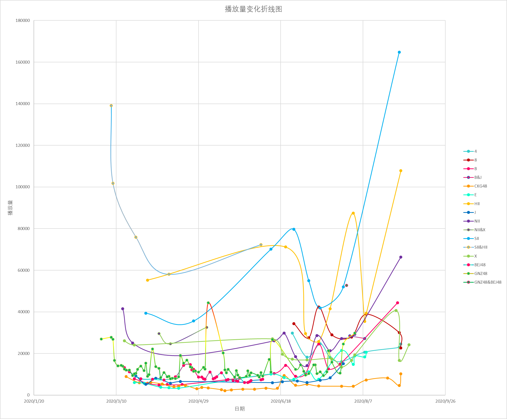

时段5：20200119-20200904

本来PART 1只做单队的公演统计，不包括任何联合公演，但是疫情期间联合公演占多数，因此一并统计以尽量反映准确情况。
SH流量王者的地位进一步稳固，不论是单独还是联合都显得一骑绝尘。
失去二期的恩与失去剧场党的叉一同flop，但本部的流量在云公演期间还是不容小觑。
悠唐与中泰的差距在云公演期间被进一步拉大，悠唐一度flop到与西开机同级，后期的流浪悠唐哪怕有不少选秀归来成员的加持也缺乏关注度，中泰不仅云公演期间鸡腿砸的多，恢复剧场公演后八班流量甚至远超本部NX。